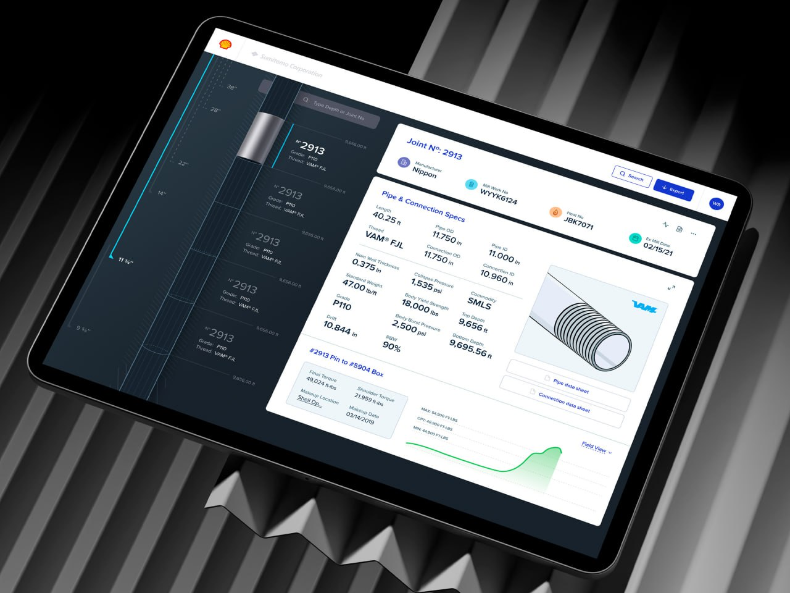
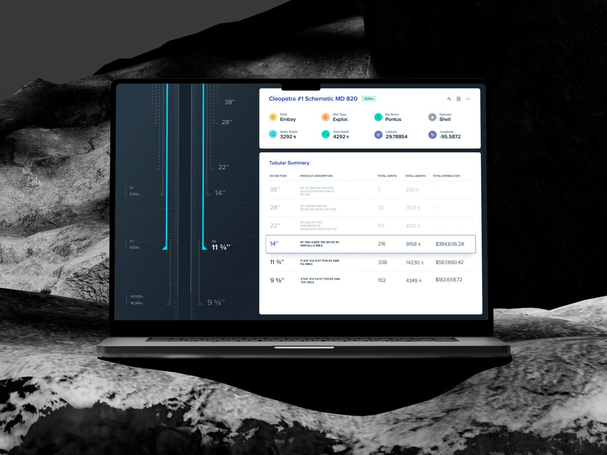

Объект начинается с карты
Для инженерной задачи важно видеть, где находится скважина или секция, а не только читать название в таблице.
Я проектировал интерфейс для работы с инженерными сведениями: карта, скважины, трубные секции, стыки, спецификации, отчеты, поиск и экспорт. Главная задача — не показать больше таблиц, а собрать объект в один понятный контекст, чтобы инженер быстрее находил нужную точку и не терял связь между схемой, параметрами и документами.

Инженерные сведения редко живут в одном месте. Пользователь держит в голове карту, схему скважины, выбранный стык, спецификации, отчеты и ограничения доступа. Когда эти слои разнесены по разным окнам, каждое переключение повышает риск ошибиться объектом, параметром или пакетом документов.
Для инженерной задачи важно видеть, где находится скважина или секция, а не только читать название в таблице.
Спецификации, схема, статусы и документы должны быть рядом, но не превращаться в шум.
Пользователь должен понимать, какие документы и параметры попадут в пакет, прежде чем отправить данные дальше.

Я собрал рабочую поверхность вокруг выбранного объекта: карта задает пространственный контекст, схема показывает место внутри структуры, карточка раскрывает параметры, поиск помогает попасть сразу в нужный объект, а импорт/экспорт управляет передачей сведений.
Такой интерфейс, по гипотезе, снижает когнитивную нагрузку: пользователь не пересобирает смысл из карты, файлов и таблиц, а видит связанную систему.
Сценарий строится вокруг вопроса “какой объект я сейчас проверяю?”. Пользователь находит скважину, выбирает стык или трубу, сверяет критические параметры, видит связанные документы и готовит контролируемый экспорт.
В промышленном интерфейсе движение должно помогать читать плотность: какой объект выбран, где он на схеме, какие спецификации относятся именно к нему и что попадет в экспорт. Любое движение, которое мешает считывать параметры, здесь вредно.
Подсветка объясняет, какая карточка сейчас управляет контекстом.
Схема и таблица читаются как две стороны одного выбранного объекта.
Движение ведет взгляд к марке, давлению, габаритам и статусу сведений.
Перед экспортом пользователь видит, какие документы и параметры уйдут дальше.
Публичная версия показывает обезличенную продуктовую логику: структура объекта, плотность сведений, поиск и контролируемая передача.
Инженер быстрее понимает, какой объект выбран, где он находится, какие спецификации критичны и какие документы с ним связаны.
Связка карты, схемы, деталей объекта, отчетов и экспорта должна снижать вероятность ошибки интерпретации и повторной работы. Это нужно подтверждать рабочей аналитикой.
Кейс показывает работу с плотным enterprise-интерфейсом: структура сведений, поиск, роли, статусы и передача информации связаны в один рабочий контекст.